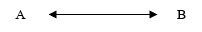
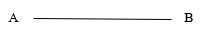
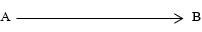
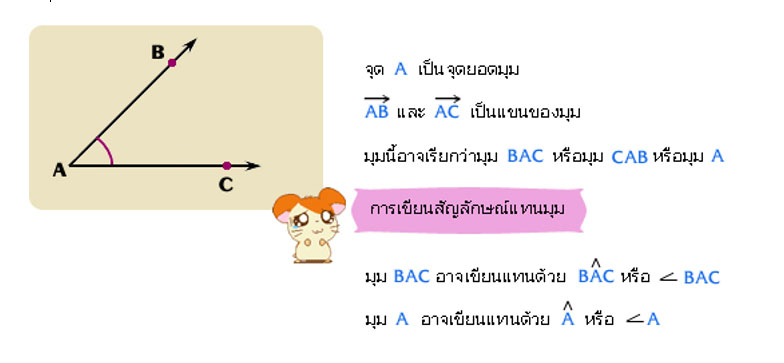
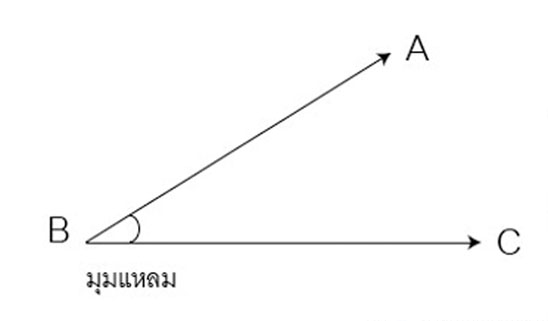
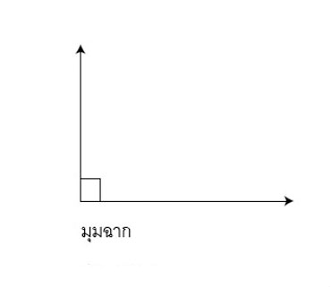
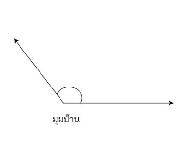
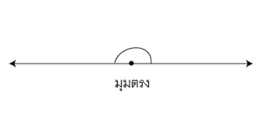
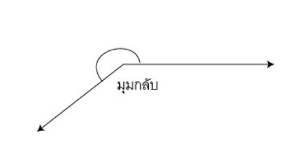

1. จุด ใช้สำหรับบอกตำแหน่ง โดยไม่สนใจความกว้าง ความยาว หรือความหนา ใช้ – เป็นสัญลักษณ์แทนจุด และเขียนตัวอักษรกำกับไว้ เช่น – A แทน จุด A
2. เส้นตรง ไม่มีความกว้าง แต่มีความยาวไม่จำกัด เช่น

สมบัติของจุดและเส้นตรง คือ
(1) มีเส้นตรงเพียงเส้นเดียวเท่านั้นที่ลากผ่านจุดสองจุดที่กำหนดให้
(2) ถ้าเส้นตรงสองเส้นตัดกันแล้ว จะมีจุดตัดเพียงจุดเดียวเท่านั้น
3. ส่วนของเส้นตรง คือ ส่วนหนึ่งของเส้นตรงที่มีจุดปลายสองจุด เช่น
 A และ B เป็นจุดปลายของเส้นตรง4. รังสี คือ ส่วนหนึ่งของเส้นตรงซึ่งมีจุดปลายเพียงจุดเดียว เช่น
5. มุม คือ รังสีสองเส้นที่มีจุดปลายเป็นจุดเดียวกัน เรียกรังสีสองเส้นนี้ว่า แขนของมุม และเรียกจุดปลายที่เป็นจุดเดียวกันนี้ว่าจุดยอดมุม เช่น
ชนิดของมุม
1) มุมที่มีขนาดมากกว่า 0º แต่น้อยกว่า 90º เรียกว่า มุมแหลม
2) มุมที่มีขนาด 90º เรียกว่า มุมฉาก
3) มุมที่มีขนาดมากกว่า 90º แต่น้อยกว่า 180º เรียกว่า มุมป้าน
4) มุมที่มีขนาด 180º เรียกว่า มุมตรง
5) มุมที่มีขนาดมากกว่า 180º แต่น้อยกว่า 360º เรียกว่า มุมกลับ
